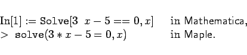
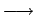

Inhalt Index DeskTop Bronstein

 Computeralgebrasysteme Einführung Kurzcharakteristik von Computeralgebrasystemen
Computeralgebrasysteme Einführung Kurzcharakteristik von Computeralgebrasystemen


In dieser Darstellung wird die konkrete Einbindung des jeweiligen Computeralgebrasystems in das Betriebssystem des Computers nicht behandelt. Es wird davon ausgegangen, daß das Computeralgebrasystem über ein Kommando aus dem Betriebssystem heraus gestartet wird und auf einer graphischen Oberfläche (GUI) und/oder einer Kommandozeile ansprechbar ist.
Die Darstellung von Ein- und Ausgaben erfolgt für Mathematica und Maple in jeweils abgesetzten Zeilen, um sie deutlich von anderen Textpassagen abzuheben, etwa in der Form
|  | (20.1) |
Systemspezifische Symbole (Befehle, Typbezeichnungen und ähnliches) werden durch Darstellung in Schreibmaschinenschrift hervorgehoben.
Aus Gründen der Platzersparnis werden zusammenhängende Ein- und Ausgaben oft durch Zusammenziehen in eine Zeile (evtl. durch das Zeichen  getrennt) dargestellt.